What are disc brakes?
Disc brakes are a vehicle braking system that uses brake pads to clamp onto a rotating metal brake disc attached to the wheel hub. When you press the brake pedal, hydraulic pressure travels through brake fluid, brake pipes and flexible hoses to the brake caliper. The caliper piston pushes the pads against the disc, creating friction that slows the wheel.
What stops the car?
Friction between the brake pads and brake disc slows the wheel. The harder the pads clamp, the more braking force is produced.
What wears out?
Brake pads wear first, but discs also wear, corrode, score and develop thickness variation. Calipers, hoses, pipes and fluid can also fail.
What is urgent?
Grinding, fluid leaks, a brake warning light, a pedal sinking to the floor or strong brake pull should be treated as urgent safety faults.
Most brake problems start small. A light squeal may only be pad wear, but if it becomes grinding the repair usually changes from pads only to pads and discs together. Early inspection is nearly always cheaper than delayed repair.
How disc brakes work
Disc brakes work by converting movement into heat. The car’s wheels, tyres and brake discs are rotating while the vehicle is moving. When the driver presses the brake pedal, hydraulic pressure is created in the master cylinder and sent through the brake fluid to the calipers. The calipers squeeze the pads against the spinning discs, creating friction and slowing the vehicle.
1. Pedal input
The driver presses the brake pedal. The brake servo assists the pedal force so the driver does not need excessive leg pressure.
2. Hydraulic pressure
The master cylinder pressurises brake fluid. Because fluid does not compress easily, pressure travels quickly through the system.
3. Caliper clamping
Caliper pistons move outward and press the brake pads against the disc faces. This creates the clamping force.
4. Friction and heat
Friction slows the disc and wheel. The energy becomes heat, which the disc must absorb and release into the air.
Disc brakes are effective because the braking surface is exposed to airflow. This helps remove heat more quickly than older drum brake designs. Front discs usually work harder than rear discs because vehicle weight transfers forward when braking, which is why front brake pads and discs often wear sooner.
This assembly is what a mechanic checks when diagnosing brake noise, uneven wear, brake pull or vibration.
Disc brake components explained
A disc brake is not just a pad and disc. It is a linked system of friction parts, hydraulic parts and mounting parts. A fault in any one part can affect stopping distance, pedal feel, MOT results and repair cost.
Brake disc
The disc, also called the rotor, is bolted to the wheel hub and rotates with the wheel. It provides the friction surface for the pads and must remain above its minimum thickness.
Brake discs explained →Brake pads
Pads are friction material bonded to a steel backing plate. They wear gradually and should be replaced before the backing plate contacts the disc.
Brake pads explained →Brake caliper
The caliper is the hydraulic clamp. It houses pistons, pads and slide mechanisms that apply braking force to the disc.
Brake calipers explained →Brake fluid
Brake fluid transfers pressure from the pedal to the calipers. Old or moisture-contaminated fluid can reduce performance and cause corrosion.
Brake fluid explained →Brake hoses and pipes
Rigid brake pipes carry fluid along the body. Flexible hoses allow suspension and steering movement. Corrosion, cracks or swelling can cause serious faults.
Brake pipes explained →Master cylinder and servo
The master cylinder creates hydraulic pressure. The servo assists pedal effort. Faults here can cause a hard pedal, soft pedal or poor braking.
Master cylinder guide →Hydraulic braking system explained
The hydraulic braking system allows a small pedal movement to create powerful braking force at each wheel. When the pedal is pressed, the master cylinder pushes brake fluid through the system. The pressure travels through brake pipes, hoses, ABS valves and calipers, moving the pistons that clamp the pads against the discs.
Why air is a problem
Brake fluid is designed to transfer pressure. Air compresses, which means pressure is lost and the pedal can feel long or spongy. Air in the system usually requires bleeding.
Why old fluid matters
Brake fluid absorbs moisture over time. Moisture lowers the boiling point and can corrode internal parts such as calipers, ABS valves and brake pipes.
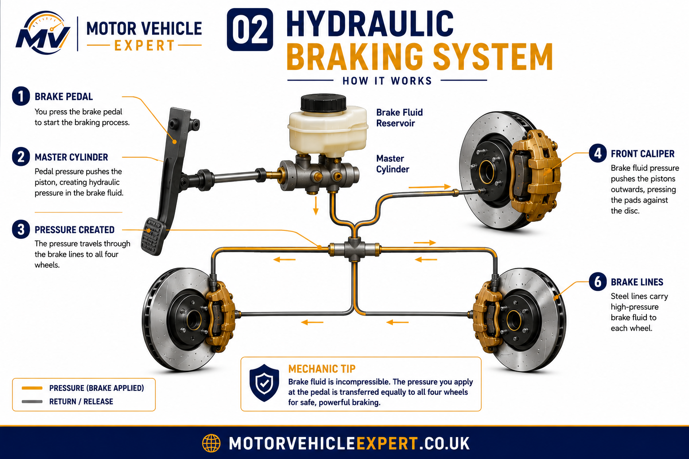
This diagram explains why leaks, air, weak seals or contaminated fluid can change pedal feel and reduce braking performance.
Types of disc brakes
Brake discs are designed around heat management, vehicle weight and expected braking load. A small city car, family SUV and performance car may all use disc brakes, but the disc construction can be very different.
Solid discs
Solid discs are a single plate of cast iron with no internal cooling vanes. They are usually found on rear axles or lighter vehicles where braking loads are lower.
Vented discs
Vented discs have internal channels between the disc faces. Air moves through these vanes as the disc rotates, helping remove heat during repeated braking.
Drilled and slotted discs
Drilled or slotted discs can help manage gases, water and pad surface condition. They are common on performance cars but can be noisier and may wear pads faster.
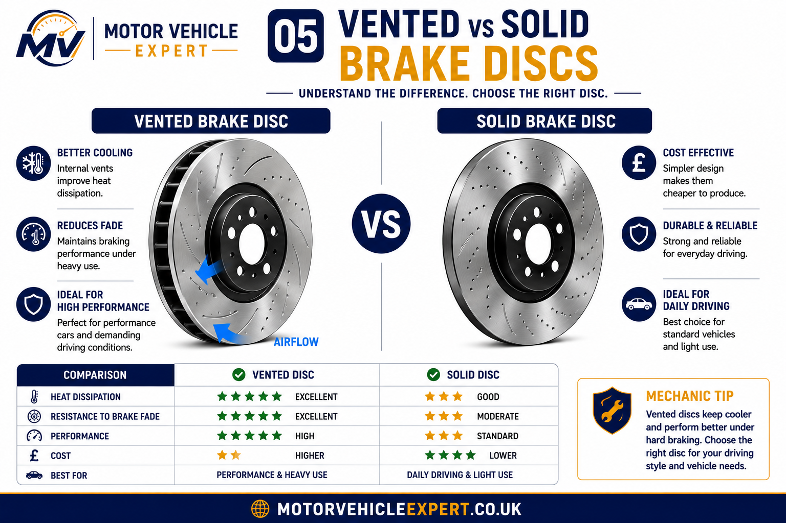
Vented discs are usually fitted where higher heat capacity is required, especially on front brakes, heavier cars and performance models.
Floating vs fixed brake calipers
Brake calipers do the clamping work. Most everyday cars use floating calipers because they are compact, effective and cost-efficient. Higher-performance vehicles may use fixed calipers with pistons on both sides of the disc.
Floating caliper
A floating caliper slides on guide pins. One piston pushes the inner pad, and the caliper body slides to pull the outer pad against the disc. Seized slide pins are a common cause of uneven pad wear.
Fixed caliper
A fixed caliper does not slide. It uses pistons on both sides of the disc. This gives strong and even clamping force but costs more to manufacture and service.
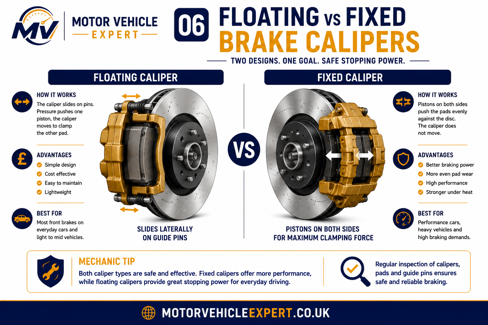
Caliper type affects wear patterns, servicing method and the faults a mechanic will look for during diagnosis.
Brake Fluid, Hoses & Pipes
Brake fluid is the pressure medium inside the braking system. It must tolerate heat, resist corrosion and remain stable under repeated braking. Flexible hoses and rigid pipes carry this pressure to the wheel brakes. If any part leaks, swells, corrodes or traps pressure, braking performance can be affected.
Brake fluid
Most modern vehicles use DOT 4 or DOT 5.1 brake fluid. It should be replaced at the correct interval because moisture contamination lowers boiling point.
Brake fluid guide →Flexible hoses
Hoses move with suspension and steering. Cracks, bulges, twists or internal collapse can cause poor braking or a caliper that fails to release.
Rigid brake pipes
Brake pipes are often exposed to road salt and moisture. Corrosion can become an MOT advisory or failure depending on severity and safety risk.
Brake pipe corrosion advisory →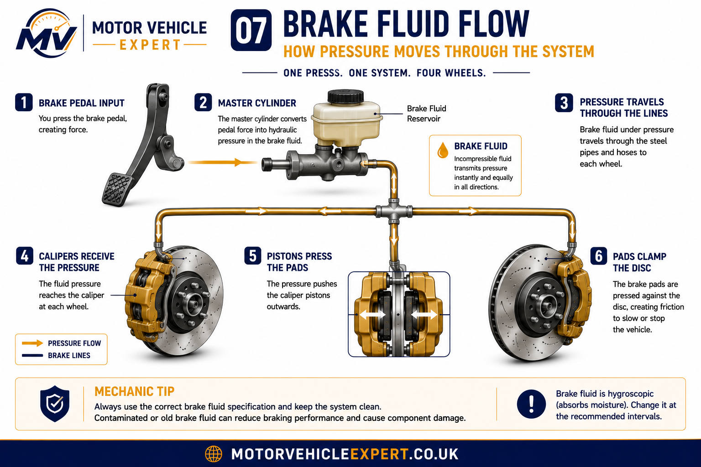
Fluid condition, hose condition and piston movement are linked. A fault in any part can affect brake release, pedal feel or braking balance.
ABS braking system explained
ABS stands for anti-lock braking system. It prevents a wheel from locking during heavy braking by rapidly controlling hydraulic pressure at individual wheels. This helps the driver maintain steering control during emergency braking, especially on wet, loose or slippery roads.
Wheel speed sensors
Sensors monitor how fast each wheel is rotating. If one wheel slows too quickly, the ABS module recognises a possible lock-up.
ABS hydraulic unit
The hydraulic control unit adjusts brake pressure many times per second to help the tyre regain grip while braking.
ABS warning light
If the ABS light stays on, normal braking may still work, but the anti-lock function may be disabled and should be diagnosed.
ABS warning light guide →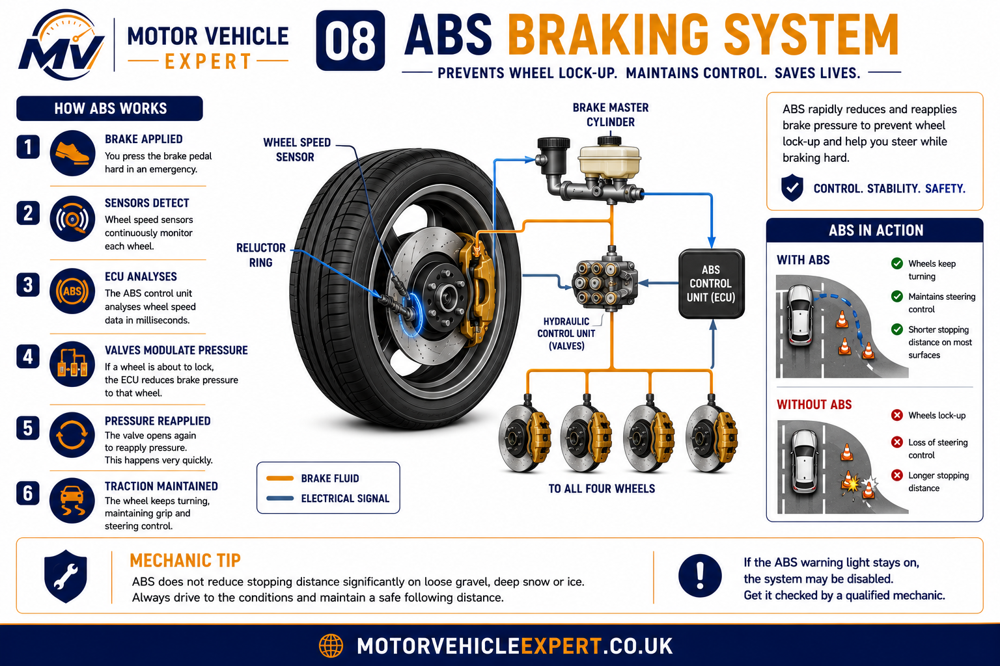
ABS does not remove the need for healthy pads, discs, calipers and fluid. It controls pressure, but the friction brakes still create the stopping force.
Signs your disc brakes need attention
Disc brakes usually provide warning signs long before they become unsafe. Learning to recognise these symptoms can help prevent expensive repairs, improve safety and reduce the chance of MOT failure. While some noises are harmless, others indicate that braking performance has already been compromised.
Squealing
A high-pitched squeal is commonly caused by brake pad wear indicators contacting the brake disc. It may also result from glazed pads, moisture, surface corrosion or poor-quality friction material.
Grinding
Grinding usually means the friction material has worn away completely and the steel backing plate is now cutting into the brake disc. Continued driving rapidly destroys both pads and discs.
Brake judder
A vibration through the brake pedal or steering wheel often points to disc thickness variation, uneven pad deposits, hub corrosion or excessive disc run-out.
Vehicle pulling
Pulling to one side during braking commonly indicates a sticking caliper, seized guide pins, contaminated brake pads or uneven braking force across the axle.
Longer stopping distance
Increased stopping distances can result from worn pads, contaminated brake fluid, glazed discs, poor-quality components or hydraulic faults.
Brake warning lights
Brake or ABS warning lights should never be ignored. They can indicate low brake fluid, worn pads, hydraulic faults or electronic braking system failures.
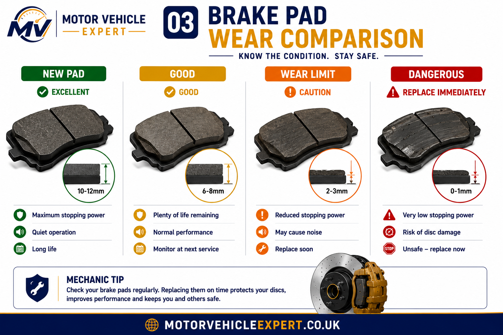
Brake pads should be replaced before the friction material reaches the metal wear indicator. Waiting until grinding starts usually means replacing the brake discs as well.
Squealing and brake noise explained
Brake noise is one of the most common concerns reported by UK drivers. While some noises are perfectly normal, persistent squealing should always be investigated because it often indicates increasing brake wear or incorrect component installation.
Normal brake noise
A light squeak during the first few brake applications after overnight parking is usually caused by a thin layer of surface corrosion on the brake discs. The pads quickly clean the disc surface and the noise disappears.
Abnormal brake noise
Continuous squealing, grinding or scraping indicates a mechanical issue requiring inspection. Worn pads, seized calipers, missing anti-rattle clips, damaged shims and contaminated friction material are all common causes.
Never assume brake noise is "normal" simply because braking still feels acceptable. Modern brake pads are designed to warn the driver before serious damage occurs. Ignoring early warning sounds usually increases the eventual repair bill.
Brake pulsation and steering wheel vibration
Brake judder is commonly described as a pulsing brake pedal or steering wheel vibration during braking. Contrary to popular belief, many discs are not actually "warped". Most modern brake vibration results from disc thickness variation, uneven friction deposits or hub contamination.
Disc thickness variation
The most common cause. Small differences in disc thickness create repeated changes in braking force every wheel revolution.
Heat damage
Excessive temperatures during repeated heavy braking can alter the friction surface and contribute to uneven braking.
Hub corrosion
Rust trapped between the hub and the brake disc prevents the disc from sitting perfectly flat.
Wheel bearing movement
Excessive bearing play allows the disc to move laterally, producing vibration and uneven braking.
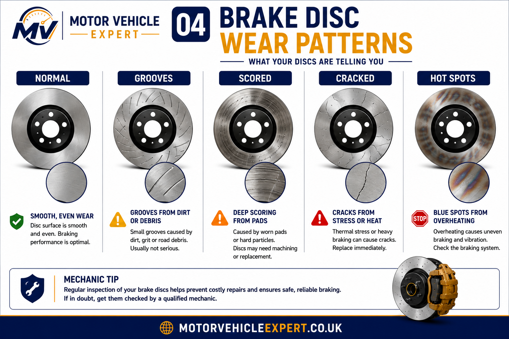
Understanding wear patterns allows technicians to determine whether discs can remain in service or require replacement.
How Long Do Disc Brakes Last?
Brake life depends on vehicle weight, driving style, traffic conditions, towing, corrosion, climate and component quality. While mileage estimates provide a useful guide, no two vehicles wear their braking systems in exactly the same way. Regular inspections remain the safest way to determine when brake components require replacement.
Front Brake Pads
25,000–60,000 milesFront pads usually wear faster because they handle most of the braking force.
Rear Brake Pads
35,000–80,000 milesRear pads often last longer, but seized calipers can make them wear quickly.
Brake Discs
50,000–120,000 milesDiscs should be measured, not guessed by appearance alone.
Brake Fluid
Every 2 yearsOld fluid absorbs moisture and can reduce braking performance.
Brake Pads
Front brake pads usually wear faster than rear pads because they provide most of the vehicle's stopping power. Stop-start driving, towing and aggressive braking can significantly shorten their lifespan.
Brake Discs
Brake discs commonly last through two sets of brake pads, although corrosion, overheating and excessive wear can require earlier replacement. Always measure disc thickness before fitting new pads.
Brake Fluid
Brake fluid gradually absorbs moisture, lowering its boiling point and reducing braking performance. Replacing it every two years helps maintain consistent hydraulic pressure and protects internal components.
Never rely on mileage alone when assessing brake condition. A complete inspection should include brake pad thickness, brake disc wear, caliper movement, brake fluid condition, brake pipes, flexible hoses and hydraulic components. Early inspections often prevent expensive repairs while maintaining safe braking performance and reducing the risk of MOT failures.
Mileage alone tells very little about brake condition. A low-mileage vehicle that has spent years standing outside can require more brake work than a motorway car with twice the mileage.
What a mechanic checks during a disc brake inspection
A professional brake inspection is far more than looking through the wheel spokes to see how much pad material remains. Experienced technicians follow a systematic inspection process that checks friction materials, hydraulic components, mounting hardware and overall braking efficiency. This approach identifies developing faults before they become MOT failures or expensive repairs.
Brake pad thickness
Pads are measured across the friction material, not the steel backing plate. Uneven wear between inner and outer pads often indicates seized guide pins or sticking caliper pistons.
Brake disc thickness
Every brake disc has a manufacturer's minimum thickness cast or stamped into the disc. A technician measures the braking surface using a micrometer to confirm it remains within specification.
Disc condition
Deep scoring, excessive corrosion, cracking, overheating and blue heat spots are all signs that replacement may be necessary regardless of remaining thickness.
Caliper movement
Floating calipers must slide freely on guide pins. Restricted movement causes tapered pad wear, brake pull and overheating.
Brake fluid condition
Fluid level, contamination and moisture content are checked. Dark fluid or excessive water contamination reduces braking performance under heavy use.
Brake hoses and pipes
Flexible hoses are inspected for cracking, swelling and leakage while rigid brake pipes are checked for corrosion and mechanical damage.
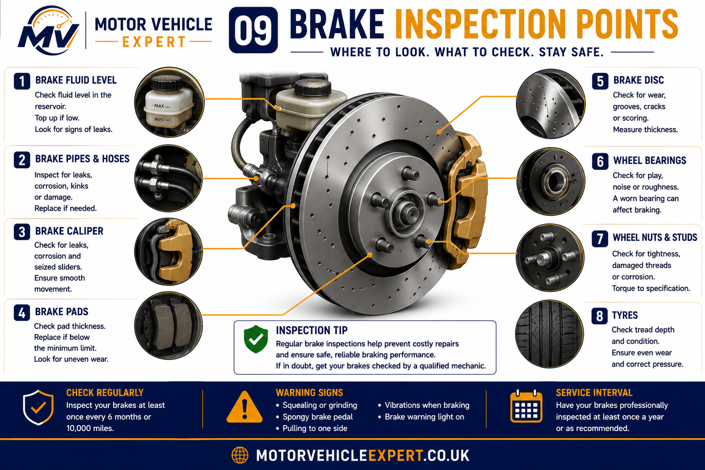
Most expensive brake repairs begin as small faults that could have been identified during a routine inspection.
Never judge brake condition purely by looking through alloy wheels. Inner pads often wear faster than outer pads and cannot be inspected properly without removing the wheel.
Disc Brakes and the MOT Test
During the MOT test the braking system is one of the most important safety inspections. Testers assess braking efficiency using calibrated roller brake testers, inspect visible brake components and look for defects that could reduce braking performance.
Brake Efficiency
Each wheel is tested on calibrated rollers to measure braking force and braking balance between the left and right sides.
Visual Inspection
Testers inspect brake discs, brake pads, calipers, flexible hoses, brake pipes and mountings for excessive wear, corrosion, leaks and insecurity.
Warning Lights
Brake warning lights and ABS warning lights that remain illuminated after engine start-up can result in an MOT failure depending on the system affected.
Brake Disc Below Minimum Thickness
MOT Result: FAILBrake discs that are worn below the manufacturer's minimum thickness can no longer dissipate heat safely and will normally result in an MOT failure.
Brake Fluid Leak
MOT Result: FAILHydraulic brake fluid leaks reduce braking performance and are considered a serious safety defect requiring immediate repair.
Seized Brake Caliper
MOT Result: FAILA seized caliper can cause uneven braking, excessive pad wear and dangerous brake imbalance.
Corroded Brake Pipe
MOT Result: FAILExcessive corrosion weakens brake pipes and increases the risk of hydraulic failure under braking.
Brake Imbalance
MOT Result: FAILUneven braking between wheels may indicate seized calipers, contaminated brake pads or hydraulic faults.
Light Surface Corrosion
MOT Result: Usually PassLight corrosion after periods of standing is common and often clears after normal driving, but excessive corrosion requires further inspection.
Immediate Repair
Brake fluid leaks, seized calipers, cracked or excessively worn brake discs and heavily corroded brake pipes should always be repaired immediately because they can seriously reduce braking performance and almost always lead to an MOT failure.
Monitor Closely
Light corrosion, minor brake wear and early MOT advisories may not fail the current test, but they should be monitored and repaired before they become more serious.
Best Practice
Arrange a brake inspection before every MOT test. Replacing worn brake pads, measuring brake disc thickness and checking brake fluid condition early is usually far cheaper than repairing MOT failures.
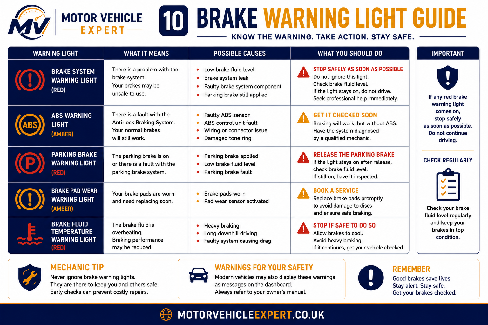
A red brake warning light may indicate low brake fluid, hydraulic faults or a parking brake issue. An ABS warning light usually indicates a fault within the anti-lock braking system. If either warning light remains illuminated after starting the engine, arrange diagnosis as soon as possible because braking performance or stability assistance may be reduced.
Passing an MOT does not guarantee that your brakes are in perfect condition. Brake components continue to wear after the test, and advisory items often become MOT failures before the next inspection. Routine servicing and early diagnosis remain the safest and most cost-effective way to maintain braking performance and avoid expensive repairs.
Should you replace disc brakes yourself?
Replacing brake pads and discs is a common DIY job, but only when carried out correctly using suitable tools and workshop procedures. Incorrect installation can seriously reduce braking performance.
Suitable for experienced DIY mechanics
- ✓Replacing pads and discs
- ✓Cleaning hub faces
- ✓Lubricating slide pins
- ✓Torqueing wheel bolts correctly
Better left to a garage
- ✓Brake pipe replacement
- ✓ABS faults
- ✓Hydraulic bleeding with diagnostic equipment
- ✓Brake servo or master cylinder faults
Typical UK brake repair costs
Labour rates, vehicle size and component quality all influence repair costs. Premium vehicles and performance braking systems are normally more expensive than standard family cars.
Front Brake Pads
£100–£220Front brake pads are normal service items. Replacing both front pads together ensures balanced braking performance and even wear.
Rear Brake Pads
£90–£200Rear brake pads generally last longer than front pads but should always be replaced as a pair to maintain braking balance.
Front Discs & Pads
£220–£500Fitting new brake discs and pads together provides the best braking performance and extends component life.
Rear Discs & Pads
£180–£420Rear brake discs and pads should normally be renewed together to ensure even braking and correct bedding-in.
Brake Caliper
£180–£450A seized or leaking brake caliper may require replacement. The opposite side should also be inspected for similar wear.
Brake Fluid Replacement
£60–£120Brake fluid should normally be replaced every two years to maintain hydraulic performance and protect internal braking components.
Repair prices vary depending on the vehicle, brake component quality, labour rates and whether genuine or aftermarket parts are fitted. If several brake components require replacement at the same time, combining repairs often reduces labour costs and improves long-term braking performance.
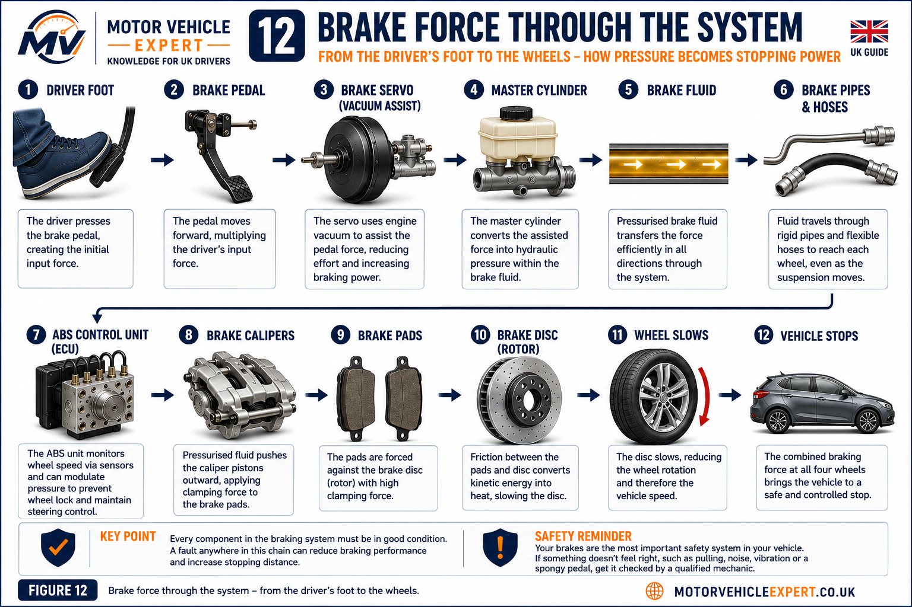
Every component contributes to safe braking. A fault anywhere along this chain can reduce stopping performance.
Checking disc brakes before buying a used car
Brake condition is one of the easiest indicators of how well a vehicle has been maintained. While worn brake pads are a routine service item, neglected discs, seized calipers, leaking brake pipes and poor brake servicing often suggest wider maintenance issues.
Walk away if...
- ✓Brake warning light stays on
- ✓Vehicle pulls heavily
- ✓Grinding during test drive
- ✓Fluid leaks visible
Negotiate if...
- ✓Brake pads nearly worn
- ✓Light disc corrosion
- ✓Brake fluid overdue
Good signs
- ✓Even pad wear
- ✓Smooth braking
- ✓Recent service history
- ✓No warning lights
Disc Brakes FAQs
These are some of the most common questions UK drivers ask about disc brakes, brake wear, servicing and MOT inspections.
How do disc brakes work?
Disc brakes work by using hydraulic pressure to clamp brake pads against a rotating brake disc attached to the wheel hub. The friction slows the wheel and converts vehicle movement into heat.
How long do disc brakes last?
Brake pads often last around 25,000 to 60,000 miles, while brake discs may last around 50,000 to 120,000 miles depending on vehicle weight, driving style, corrosion, load and maintenance.
Why are my disc brakes squealing?
Disc brakes can squeal because of pad wear indicators, glazed pads, surface rust, poor-quality pads, missing shims or caliper vibration. Persistent squealing should be inspected before it becomes grinding.
Can worn disc brakes fail an MOT?
Yes. Disc brakes can fail an MOT if discs are excessively worn, cracked, heavily scored, badly corroded, leaking, imbalanced or unsafe. Brake warning lights and poor braking efficiency can also cause MOT failure.
What causes brake judder or pulsation?
Brake judder or pulsation is commonly caused by disc thickness variation, disc run-out, heat distortion, uneven pad deposits, hub corrosion or wheel bearing movement.
Should brake discs and pads be replaced together?
Brake discs and pads should usually be replaced together on the same axle when discs are worn, scored, below minimum thickness or damaged. Fitting new pads to poor discs can cause noise, uneven bedding and reduced braking performance.
Explore the Complete Braking System Knowledge Centre
Disc brakes are only one part of the vehicle's braking system. Continue exploring our detailed UK guides covering individual brake components, hydraulic systems, warning lights, MOT inspections, repair costs and common faults. Together these articles form the Motor Vehicle Expert Braking System Knowledge Centre.
Brake Components
Hydraulic Braking
ABS & Warning Lights
MOT & Brake Safety
Brake Repair Costs
Driver Guides
Understanding the Complete Braking System
Disc brakes cannot be viewed in isolation. Safe braking depends on every component working together correctly. The driver's foot applies force to the brake pedal, the servo multiplies that force, the master cylinder creates hydraulic pressure and the brake fluid transfers that pressure through brake pipes and hoses before the calipers clamp the brake pads against the discs. Modern vehicles also rely on ABS, electronic stability systems and tyre grip to achieve predictable stopping performance.
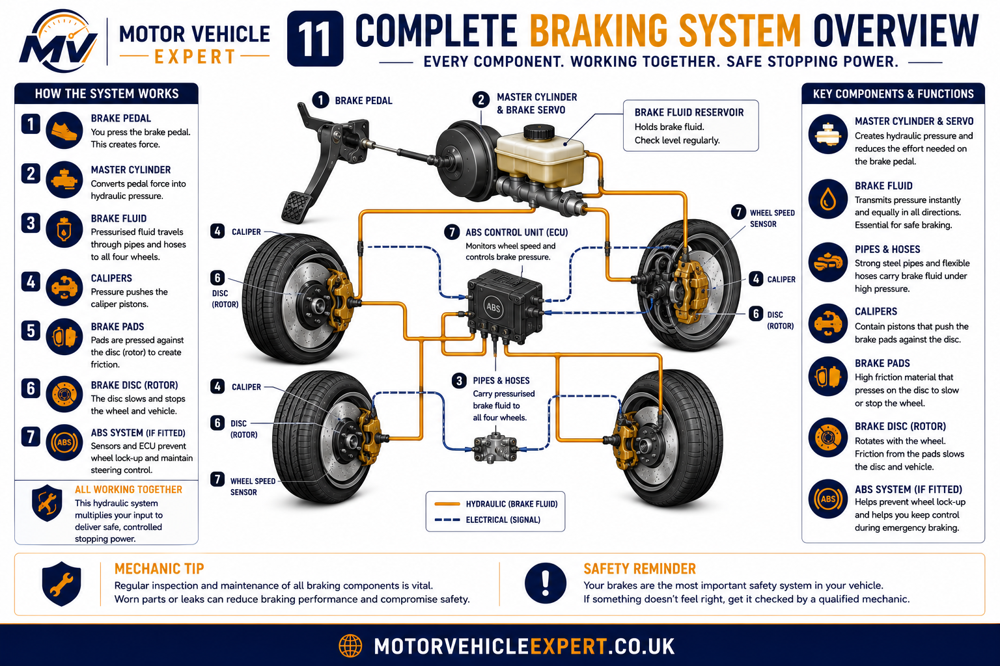
Understanding the relationship between these components makes brake diagnosis significantly easier. A soft pedal, for example, may originate from contaminated brake fluid rather than worn brake pads, while uneven braking may be caused by a sticking caliper instead of a damaged brake disc.
What Every Driver Should Remember
Good Brake Maintenance
- ✓Inspect brakes regularly.
- ✓Replace brake pads before they wear completely.
- ✓Measure brake discs rather than guessing.
- ✓Replace brake fluid at the recommended interval.
- ✓Use quality replacement components.
Never Ignore
- ✓Grinding noises.
- ✓Brake warning lights.
- ✓Brake fluid leaks.
- ✓Vehicle pulling under braking.
- ✓Longer stopping distances.
Looking After Your Vehicle's Braking System
Disc brakes remain one of the most important safety systems on any vehicle. Understanding how they work, recognising the early signs of wear and carrying out routine maintenance can improve stopping performance, reduce long-term repair costs and help prevent unexpected MOT failures.
While brake pads and discs are normal service items, components such as brake calipers, brake fluid, hydraulic brake pipes, the master cylinder and ABS system also play a critical role in safe braking. Diagnosing problems early often prevents minor faults from becoming expensive repairs.
Continue exploring our complete braking system guides including Brake Pads Explained, Brake Discs Explained, Brake Calipers Explained, Brake Fluid Explained, Brake Pipes Explained, Brake Servo Explained, Brake Master Cylinder Explained, Brake Disc Replacement Cost UK and Brake Caliper Replacement Cost UK.
Together these guides form the Motor Vehicle Expert Braking System Knowledge Centre, helping UK drivers understand braking technology, diagnose common faults, prepare for MOT inspections, compare repair costs and make informed maintenance decisions with greater confidence. Whether you are maintaining your own vehicle, buying a used car or simply want to understand how modern braking systems operate, our growing collection of expert guides is designed to provide clear, practical and independent advice for every stage of vehicle ownership.